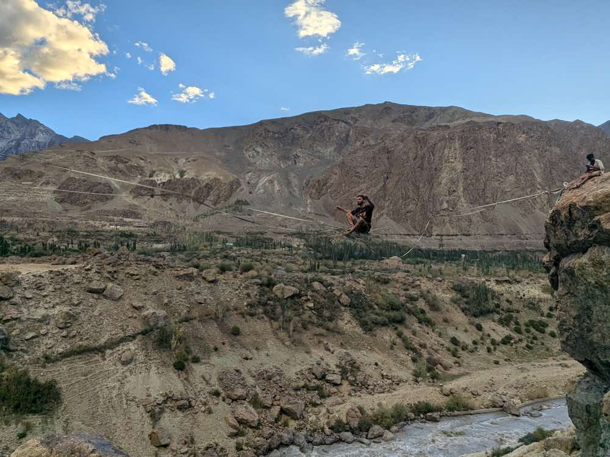
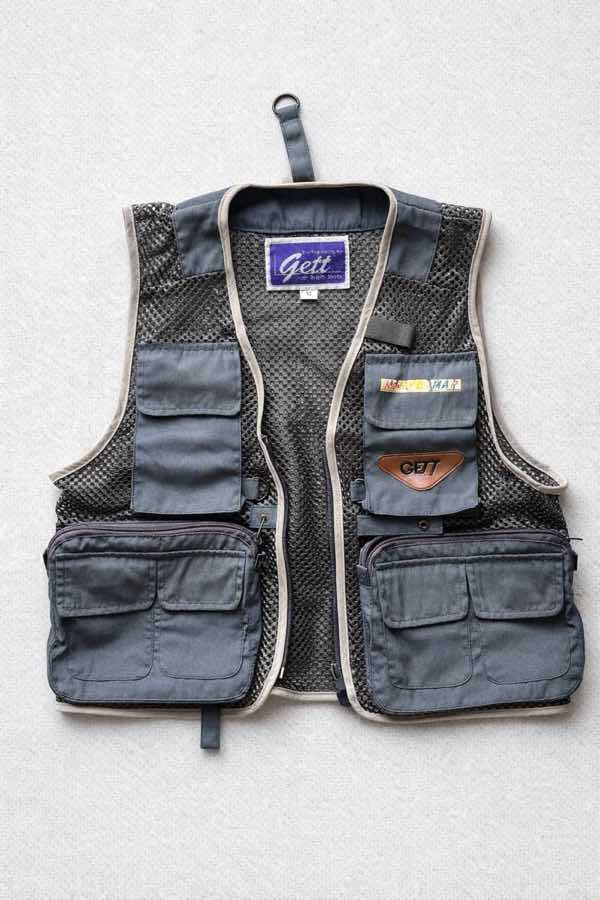
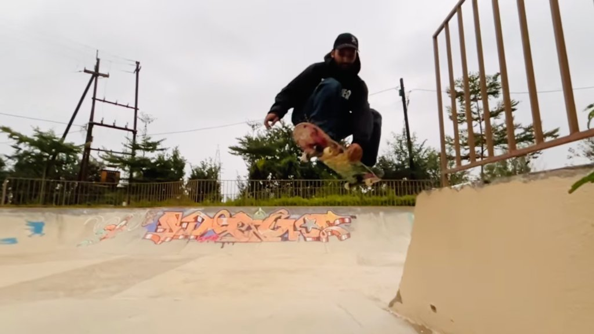
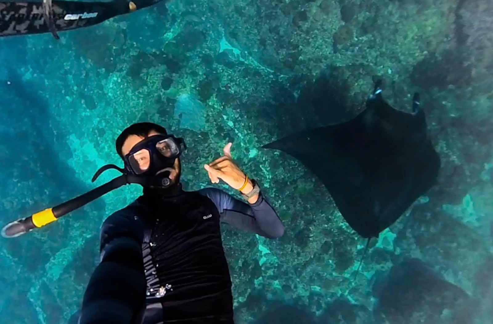

🏠
Trip started
September 13, 2026
🇮🇳 India
•
September 14, 2026
•
☀️ 14°
Departing from Manali valley floor through lush pine forests. Packing recovery gear and highline equipment into the Black Suzuki Jimny 4x4.

Chopsticks
🍴 SIT DOWN
🇮🇳 India
•
September 15, 2026
•
❄️ -2°
Conquering the 16,700 FT pass into Zanskar! Fluttering Tibetan prayer flags, steep snow cuts, and low-range 4WD crawling over rough glacial rocks.

Shinkula Pass Border Marker
🏔️ 16,700 FT SUMMIT
🇮🇳 India
•
September 16, 2026
•
🌤️ 8°


Riverside camp under clear Himalayan night skies in Padum. Refueling the Black Jimny at the local fuel pump before tackling the remote Penzila climb.
Padum Fuel & Base Camp
⛽ FUEL DEPOT
🇮🇳 India
•
September 17, 2026
•
☀️ 6°


Swapping the 4x4 Jimny for the downhill longboard! Carving steep mountain asphalt curves at high speed beneath massive towering peaks.
Penzila Downhill Hairpins
🛹 SPEED RUN
🇮🇳 India
•
September 18, 2026
•
🌤️ 11°


Rigging a highline across the roaring Suru river canyon between sheer vertical rock walls.
Suru Gorge Highline Webbing
🪢 HIGHLINE 10,500 FT
🇮🇳 India
•
September 19, 2026
•
❄️ 2°
Standing above the gigantic curving ice tongue of Drang-Drung Glacier. 420 kilometers of road trip, mountain passes, longboarding and highlining complete!